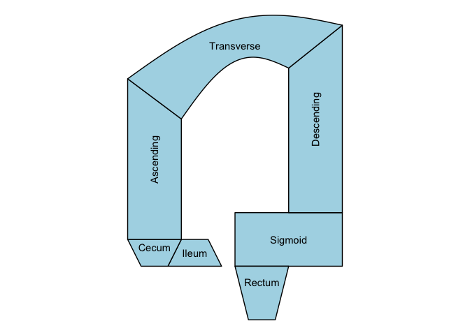

The goal of ggcolonviz is to provide a ggplot2 extension for visualizing the colon in a clear and informative way. It offers a set of functions to create detailed and customizable plots of the colon, allowing users to easily represent various aspects of colon anatomy and related data.
Here is a basic example of how to use ggcolonviz to create a simple plot of the colon:
library(ggcolonviz)
library(ggplot2)
patient_data <- data.frame(
x = 0,
y = 0,
part = c(
"Ileum",
"Cecum",
"Sigmoid",
"Ascending",
"Descending",
"Transverse",
"Rectum"
)
)
patient_data |>
ggplot(aes(x = x, y = y, part = part)) +
geom_colon(
color = "black",
linewidth = 0.5,
fill = "lightblue"
) +
geom_colon_label() +
coord_fixed() +
theme_void()